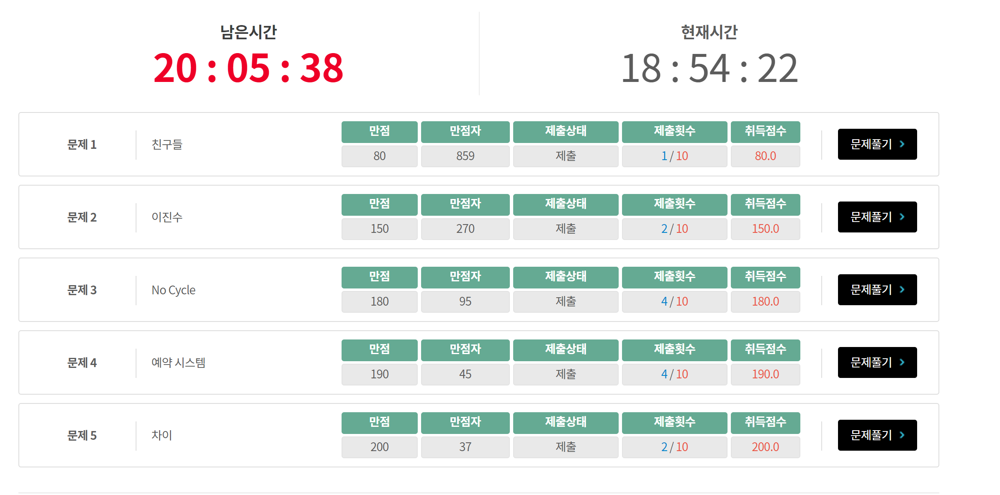

삼성 SCPC 예선 1라운드 풀이 / 후기
SCPC
SCPC는 삼성전자 (정확히는 Samsung Research) 가 주관하는 알고리즘 문제풀이 대회로, 한국에서 열리는 기업 대회중 가장 큰 규모를 자랑하는 대회입니다. 한국의 코드잼이라고나 할까요.
ICPC, UCPC 등 팀대회와는 달리 개인전이고, 예선 1라운드 - 예선 2라운드 - 본선으로 구성됩니다.
예선 1라운드는 24시간, 예선 2라운드는 12시간이라는 엄청난 시간이 주어지고 지구력을 강하게 요구합니다. 또한 제출 기회가 10번(문제에 따라 20번)으로 제한되어 있다는 점도 특징입니다.
참고로, 2020년 대회는 예선 1라운드를 통과하고 2라운드를 멋지게 말아먹었습니다. 저는 부분점수 시스템을 탓하기로 했습니다만 작년 대회 문제를 다시 stress-test 해보니 꼭 그렇지는 않은 모양입니다. 작년 대회에 대한 (감정이 많이 실린) 후기는 여기 에 적혀 있습니다.
작년에는 1차 예선 5번을 해결하지 못했지만, 올해는 시작 약 4시간 만에 모든 문제에서 만점을 받을 수 있었습니다. 올해의 구현 코드 링크는 여기 에 있습니다.

문제 풀이 / 후기
시간복잡도에 대한 모든 언급은 테스트케이스 한개당 복잡도입니다.
구현체를 업로드하긴 하곘지만, 대회중 구현한 코드라서 굉장히 바보같은 실수와 redundant한 구현이 있습니다.
코드를 정리해서 쓰지 않고 incremental하게 생각해서 그런데, codeground에 연습이 올라오면 정리를 해볼지도 모르겠습니다. 현재 코드가 라운드 중 제 생각의 과정을 그대로 반영해서 오히려 이런 글에 더 적절하다는 생각도 듭니다.
Problem 1. 친구들
문제설명
- $i$ 번 사람이 $i + D_i$ 번과 친구이고, 친구관계가 equivalence relation을 이룰 때, 친구 관계인 극대 그룹의 개수를 출력하는 문제입니다.
- 극대 그룹이란 “현재 이 그룹 안에서 뽑은 임의의 2명이 서로 친구이면서”, “이 성질을 깨지 않고 이 그룹에 누군가를 추가할 수 없음” 을 말합니다.
풀이 (Disjoint Set)
- 즉, equivalence class의 개수를 세는 문제입니다.
- Disjoint Set Union (DSU) 또는 Union Find (UF) 라고 알려진 자료구조를 써서 쉽게 구현할 수 있습니다.
- DSU의 구현체와 마지막에 개수를 어떻게 세느냐에 따라 $O(n \log^* n)$ 에도 풀 수 있지만, 저는 그냥 평범하게 merge by size & path compression을 쓰고 set을 써서 $O(n \log n)$ 으로 구현했습니다. 단 한번도 UF가 느려서 문제가 생기는걸 본적이 없습니다.
- 대략 8분 정도 만에 AC를 받았던것 같습니다. 어떤 대회든 시작하면 순간 심박수가 확 높아지는 제 심각한 단점에 의해 필요 이상으로 힘들었습니다.
Problem 2. 이진수
문제설명
- N비트 비트열 $A$로부터 $B$를 다음과 같이 만듭니다.
-
B[i] = A[i - t] || A[i + t](단, 인덱스가 1 - N 범위를 벗어나면 무시) - B가 주어질 때, A를 복원하는 문제입니다. 가능한 A가 여러가지이므로 이진수로 볼 때 가장 작은 - 즉, 사전순으로 가장 앞서는 답을 출력해야 합니다.
풀이 (Greedy)
- 사전순이라는 조건 때문에, 앞비트를 0으로 만들 수 있다면 무조건 0으로 만들어야 합니다. 따라서, 최대한 앞비트에 0이 많이 오게 Greedy하게 풀면 됩니다.
- 주의할 점은, $B_i$가 0이면 $A_{i - t}$ 와 $A_{i + t}$ 가 무조건 0이어야 하므로, 어떤 $A_j$ 들은 0으로 고정당합니다. 이것 때문에 앞과 뒤 중 앞을 1로 만들어야만 하는 (사전순으로는 뒤를 1로 만들고 싶겠지만) 상황들이 발생합니다.
- 저는
fix라는 배열을 관리하고,fix배열에 True가 켜져 있으면 손을 못댄다고 생각하는 방식으로 구현했습니다. - 대략 30분 정도 만에 AC를 받았습니다. fix를 생각하지 않고 그리디하게 했다가 뭔가 답이 안나와서 잠깐 고민했고, 버퍼 이슈 때문에 한번 TLE를 받았습니다.
Problem 3. No Cycle
문제설명
- Directed Acyclic Graph $G$와, 방향이 정해지지 않은 간선들이 주어집니다.
- 간선들에 정방향 (입력방향) 또는 역방향 (입력 반대방향) 을 줍니다. (각각을 0과 1로 표시)
- 목표는 방향을 다 정해서, 결과 그래프가 여전히 Acyclic하게 만드는 것입니다. 당연히 여러 개의 답이 있는 경우들이 있으며, 이런 경우에는 간선들을 0 1 로 표시했을 때 사전순으로 가장 앞서는 답을 출력합니다.
풀이 (Greedy + Graph)
- Subtask 1은 간선개수 10개, 정점개수 10개이므로 $2^{10}$가지 경우의 수를 확인하는 풀이가 가능합니다. 이걸로 41 / 180점을 받습니다.
- 사전순을 일단 생각하지 말고, 사이클 없는 간선 방향 정하기만 생각해 봅시다. 여기까지는 굉장히 많이 알려진 문제이며, 주어진 DAG를 Topological sorting한 다음 Topological order를 기준으로 간선을 앞 -> 뒤로 모두 정해버리면 사이클이 발생하지 않습니다. 임의의 Directed Graph가 주어졌을때 사이클이 있는지 확인하는 방법 중, 위상정렬하고 back edge가 있는지 보는 방법이 있음을 알고 있다면 이 방법은 쉽게 떠올릴 수 있습니다. 제가 PS를 처음 시작하고 얼마 안되어 codeforces에 이 문제가 한번 나왔는데 한참 생각해서 풀고 기분이 꽤 좋았던 기억이 있습니다.
- 여기까지, Subtask 2를 해결할 수 있으며, 52 / 180점을 받습니다. 서브태스크 1과 함께하면 93 / 180점입니다.
- 문제 전체를 해결하기 위해서는 조금더 잘 생각해볼 필요가 있습니다. 먼저, 사전순 조건 때문에 만약 가능하다면 항상 앞간선에 0번방향을 부여하고 싶다는 사실을 기억합시다.
- $n \times n$ 의 비트 행렬
R이라는걸 생각하겠습니다.R[i][j]는, $i$ 에서 $j$로 가는 경로가 있음을 의미합니다. - $(u, v)$ 간선의 방향을 정하는데,
R[v][u]가 True이면 $u \to v$ 방향으로 간선을 줄 수 없습니다. - 그렇지 않다면, $u \to v$ 방향으로 간선을 줄 수 있으므로 주어야 합니다.
- 이제, 간선을 추가했다면
R행렬을 업데이트해야 합니다.R행렬을 업데이트하는 것은- $u$ 에 도달 가능한 모든 정점 $i$에 대해, 즉
R[i][u]가 참인 모든 $i$에 대해 -
R[i][j]에 $i \to u \to v \to j$ 경로의 존재성을 반영합니다. 즉,R[i][j] |= R[v][j]를 해줘야 합니다.
- $u$ 에 도달 가능한 모든 정점 $i$에 대해, 즉
- 따라서, 각 간선을 볼때마다 최대 $O(n^2)$ 칸의
R행렬을 업데이트해야 하기 때문에, $O(n^2 k)$ 알고리즘이 됩니다. - $n = 500, k = 2000$ 이므로, 이 시간은 기분이 몹시 나쁩니다. $500 \times 500 \times 2000$ 짜리 테스트케이스 한개면 모를까, 그걸 70개 해결할 수는 없어 보입니다.
-
R행렬을std::bitset으로 관리하면, 시간복잡도는 줄어들지 않지만 비트연산을 묶어서 처리함으로써 64배 빨라집니다. 이를 이용하여, $O(n^2 k)$ 알고리즘을 시간내에 구겨넣을 수 있습니다. - bitset을 쓰는 추한 풀이가 싫다면, 매번 간선을 추가할때마다 간선을 0-방향으로 추가해보고 사이클이 있는지 검증하고, 1-방향으로 추가해보는 식으로 $O(nk)$ 에도 풀 수 있다고 합니다. 어떻게 이걸 생각을 못했지????? 이건 라운드가 끝나고
dhdroid랑 디스커션하다가 알았고, bitset을 쓰는 추한 풀이로 욕을 먹었습니다. ㅎㅎ;; -
R행렬을 처음에 바보같이 DFS로 계산하는 과정에서 실수를 해서, 이문제 AC를 받는데 무려 1시간 30분 정도가 걸렸습니다. (1시간 58분 AC) 중간에 혹시 못풀수도 있겠다는 공포에 52점을 먹는 등 (22.5시간이 남았음에도…) 24시간 대회는 대회 전략을 고려하지 않고 편한 마음으로 PS를 해야하는데 제가 그게 좀 안 됩니다. 작년 2차 3번의 악몽때문에 제출 기회 제한을 두려워하는 것도 좀 있습니다. 중간에 4번을 좀 생각하다가 돌아와서, 4번은 좀 빨리 풀었습니다.
Problem 4. 예약 시스템
문제설명
- $2$행 $m$열로 방들이 있고, 같은 열의 위아래 행들과 같은 행의 양 옆 열들을 ‘인접’ 하다고 정의합니다.
- 사람 $2m$ 명이 각각 스트레스 지수를 가지고 있고, $n$개 그룹으로 나뉘어 있습니다.
- 인접한 방에 다른 그룹의 사람을 배치하면, 그 두 방에 들어간 사람의 스트레스 지수 합만큼 페널티가 발생합니다.
- 이를 최소화하는 방 배치를 찾고자 합니다.
- 재밌게도, 각 그룹은 5명 이상이라는 조건이 있습니다. 이 조건이 없으면 문제가 정말 끔찍할 것입니다.
풀이 (Greedy + Casework)
- 어렵지만 재밌었습니다. 먼저, 그룹 $i$의 사람 숫자가 실제로 몇명인지보다는 홀수인지 짝수인지가 중요함을 관찰합니다.
- 왜냐면, 어차피 같은 그룹의 사람들끼리 붙여주면 그 벽에서는 페널티가 발생하지 않고, 페널티가 발생하는 경우는 아래 케이스들밖에 없기 때문입니다.

- 잘 관찰해 보면, 홀수 블록이든 짝수 블록이든 끝 4명정도만 중요합니다. 대신 홀수블록이 포함된 연산에서는 2번 페널티를 일으키는 사람이 있게 됩니다.
- 또한, 가장자리 블록은 스트레스를 덜 발생시킵니다.
- 홀수 블록과 짝수 블록에 대해 다음을 계산합니다. 각 블록의 스트레스 지수가 작은 사람부터 정렬했다고 합시다.
-
(홀수 블록)
l3 = 2 * s[0] + s[1]은 가장자리 홀수 블록이 다른 홀수 블록과 만날때 스트레스 값입니다. -
(홀수 블록)
l5 = 2 * s[0] + s[1] + s[2] + s[3]은 가장자리가 아닌 홀수 블록이 한쪽으로 다른 홀수 블록과, 다른 쪽으로 짝수 블록과 만날때 스트레스 값입니다. -
(짝수 블록)
l2 = s[0] + s[1]은 가장자리 짝수 블록이 다른 짝수 블록과 만날때 스트레스 값입니다. -
(짝수 블록)
l4 = s[0] + s[1] + s[2] + s[3]은 가장자리가 아닌 짝수 블록이 좌우로 다른 짝수 블록과 만날때 스트레스 값입니다. -
(짝수 블록)
l6 = 2 * s[0] + 2 * s[1] + s[2] + s[3]은 가장자리가 아닌 짝수 블록이 좌우로 홀수 블록과 만날때 스트레스 값입니다.
-
(홀수 블록)
- 서브태스크 1, 모든 그룹이 짝수명일 때는 가장자리 두 블록은
l2, 나머지 블록들은l4만큼 스트레스를 발생시킵니다. 따라서, 모든 블록의l4를 더한 다음,l2 - l4값이 가장 작은 두 블록에 대해서만l4를l2로 바꿔치기하면 됩니다. - 서브태스크 2, 모든 그룹이 홀수명일 때도 거의 똑같습니다. 다만 이때는
l5와l3이 됩니다. - 여기까지 해서 88 / 190점을 받을 수 있습니다.
- 이제, 다시 경우를 나눕니다. 여기서 하나 의문을 가질만한 것은,
l6이 어떨때 필요한지 생각하는 것입니다.- (홀수, 짝수 블록 여러개, 홀수) 블록이 있는데, 이 블록들이 가장자리가 아닌 곳에 배치한다면,
l5 + l6 + l6 + l6 + ... + l5가 될 것입니다. (각 블록의l5, l6값을 보고 있으므로l6 + l6이 같은l6이 아니라, 각 블록의l6-값을 의미합니다) - 그런데, (홀수, 홀수, 짝수….) 로 배치를 바꾸면,
l5 + l5 + l4 + l4 + .... + l4를 지불하게 됩니다. 따라서, ‘가장자리 이득’ 을 보고 싶은 상황이 아니라면l6은 아예 필요가 없습니다. - 같은 방법으로 (벽, 홀수, 짝수, 짝수, … 홀수) 를 분석하면, 이것도 이득이 없습니다.
-
l6이 말이 되는 유일한 상황은, (벽, 홀수, 짝수, 짝수, …., 홀수, 벽) 인 상황입니다. - 또한, (홀수, 짝수, 짝수, …, 홀수, 홀수, 짝수, 짝수, … 홀수) 도 잘 분석해 보면 홀수블록들끼리 묶어주는게 이득임을 알 수 있기 때문에, 경우의 수를 잘 나누면
l6이 말이 되는 유일한 상황은 위 상황에 추가로 홀수가 벽에 붙은 저 두개밖에 없어야 함을 압니다. 직관적으로 홀수블록의 세번째, 네번째 사람 스트레스값이 너무 커서 이 사람들한테 벽에 붙은 방을 주는게 갈등의 절대적인 개수를 줄이는 것보다 이득이라고 생각하면 됩니다. - 따라서, 이 경우는 별도로 계산합니다. 홀수 블록 두개의 l3와 나머지의 l6을 더하는 경우가 되겠습니다.
- 이외에는, 한쪽 벽에 (홀수, 홀수) 블록이 박히는 경우를 생각해 줘야 합니다. 이것도 l3, l5 더하고 나머지는 다 l4를 더하다가 맨 오른쪽 끝 블록에서는 l2를 더하는 것이므로, 어렵지 않게 계산 가능합니다.
- (홀수, 짝수 블록 여러개, 홀수) 블록이 있는데, 이 블록들이 가장자리가 아닌 곳에 배치한다면,
- 홀수블록이 2개보다 많이 있다고 가정합시다. 이제,
l6은 아예 생각할 필요가 없습니다. - 홀수블록은 가장자리에 들어가면
l3, 그외에는 모두l5의 스트레스를, 짝수블록은 각각l2와l4를 발생시킵니다. - 따라서,
l5와l4들을 모두 더해주고,l3나l2로 바꿀 수 있는 기회를 두번 준다고 이해하면 됩니다. 이건 struct에 점수를 계산하는 함수를 몇개 구현하면 정말 이쁘게 구현할수 있습니다. - 말하는것보다 코드를 보면 조금더 이해가 쉽습니다.
- 대략 1시간 정도 걸려서, 3시간 02분 시점에 AC를 받았습니다.
l6을 고려하지 못해서 2번 틀렸고, 단순 코딩 실수로 1번 틀렸습니다.
Problem 5
문제 설명
- 두가지 쿼리가 주어집니다.
1 i j k쿼리는, $X_i - X_j = k$ 임을 의미합니다.2 i j쿼리는 $X_i - X_j$ 값을 묻습니다. - 1번쿼리로 주어진 상대적인 정보만을 가지고 2번쿼리의 값을 계산할 수 있다면 계산하고, 계산하지 못한다면 ‘비교 불가능’을 출력합니다.
- 단, 1번 쿼리가 inconsistent하게 주어질 수 있습니다. 만약 2번쿼리가 들어왔는데 $X_i - X_j$가 여러 가지가 가능해서 계산이 불가능하다면 이를 출력합니다.
풀이 (DSU-based)
- 의도한 것인지 알 수 없으나, 백준에 대단히 비슷한 문제가 있습니다. 3830번 입니다.
- 3830번과 이 문제의 차이는 Inconsistency의 유무밖에 없습니다. 그 외에는 모든점에서 동일합니다.
- 3830번은 Platinum III 이긴 하지만, 비교적 많이 풀린 문제이므로 구글링해보면 솔루션은 많이 있습니다. 다시 설명하기는 너무 기니까 대충 요약하자면, DSU를 쓰되, DSU에 추가하면서 이 노드와 이 노드가 포함된 집합의 루트와의 차를 기억하면서 DSU를 쓰면 됩니다.
- 이 코드로 서브태스크 1, 3 (inconsistency 없음) 을 쉽게 풀 수 있습니다.
- 이제, Inconsistency를 생각해 봅시다. 만약 현재 $x_1, x_2, x_3$ 에 대해 $x_1$ 을 0이라고 할 때 relatively $x_2 = 3, x_3 = 2, x_4 = 6$ 이라는 정보가 있다고 합시다.
- $x_2 - x_3 = 1$ 이라는 정보가 주어지면 무시하면 됩니다.
- 만약, $x_2 - x_3 = 2$ 와 같이 틀린 정보가 주어지면, $x_2$의 relative한 값을 이제 알 수 없게 됩니다.
- 재밌는 사실은, 아무 상관 없어 보이는 $x_4$ 도 미지의 값이 된다는 점입니다. 그 이유는, $x_3$ 이 ?가 된 상황에서 위 정보로부터 $x_4 - x_3 = 4$ 와 같은 정보도 implicit하게 주어져 있다고 가정해야 하기 때문입니다.
- 따라서, ?와의 차이를 계산당하는 과정에서 $x_1$을 루트로 하는 트리 전체가 ?가 되어 버립니다.
- 그러므로 DSU를 하면서, 루트와의 차이 뿐 아니라 이 노드가 이미 망했는지 여부까지 같이 들고 다니면 됩니다. 모든 노드에 망했다는 정보를 뿌리기에는 시간이 너무 많이 들기 때문에, 루트에만 저장해 놓고 ‘이 트리가 통째로 망했다’ 라고 기억하면 됩니다. 저는 DSU에서 생각하다가 살짝 꼬여서 find하면서도 정보를 갱신하게 해놨는데 아마 필요 없는 것 같습니다.
- 3830을 풀어봤기때문에 1시간 정도 걸려서 4시간 쯤에 AC를 받았습니다.
후기
- 작년 1차보다는 문제가 많이 쉽다고 느껴졌습니다. 특히 후반 문제가 많이 쉬워졌습니다. 작년에는 1차 예선 4번에 금광세그가 출제되고, 5번문제가 충격적으로 어려워서 오전 9시에 시작한 대회가 저녁시간까지 5번 만점자가 한자리수, 4번이 30여명 정도밖에 없었던 기억이 있습니다. 작년에 비해 대회 4시간 만에 4번, 5번 만점자가 40여명 나왔네요.
- 작년에는 2번부터 DP를 prefix sum으로 최적화하는 등 ‘시간 복잡도를 낮추기 위한 아이디어’ 를 요구했었습니다. 그에 비하면 이번 2번은 그냥 그리디인것도 차이가 명확해 보입니다.
- 저는 체감상 4번이 5번보다 어려웠습니다. 실제 만점자수도 현재 (대회 절반 시점) 127 : 79인데, 보통 4번을 먼저 읽을 것임을 고려할때 이정도면 4번이 5번보다 어렵다고 느낄만한 여지도 충분하다고 생각합니다. 3번과 4번의 차이도 1.5배밖에 안 나네요.
- 재밌었습니다. 다만… 2차를 통과할 수 있을지는 솔직히 자신은 별로 없습니다. 반반 정도 봅니다.
부록 : 버퍼 이야기 (SCPC 주의사항)
- 주의 : 제 컴퓨터구조/시스템 프로그래밍 실력은 매우 미약하기 때문에 올바르지 않은 주장이나 사실이 있을 수 있습니다. 건설적인 피드백을 200% 환영합니다.
- SCPC의 부분점수 시스템은 굉장히 특이합니다.
- 구체적으로, 문제가 모두 multi-testcase 형으로, 처음에 testcase의 개수 T를 받고 T개의 TC를 해결하는 식입니다. 예를 들어, TC i의 답이 i라고 하면, 다음과 같이 출력합니다.
Case #1 1 Case #2 2 .... - 서브태스크 1, 2, 3이 있고, 각각이 TC 10개 씩이라면, 1~10, 11~20, 21~30 이런 식입니다.
- 그래서, 23번 TC가 틀리고 그 전까지 다 맞았다면 서브태스크 1과 2의 점수를 받습니다.
- 여기서 시간 초과가 발생하는 상황을 생각해 보겠습니다. 예를 들어 23번 테스트케이스를 수행하다가 시간 초과가 났습니다. 우리의 직관은 23번 TC가 WA인것과 TLE인 것이 동치이므로, 역시 서브태스크 2에 대한 점수를 받을 것으로 예측할 것입니다.
- 하지만, C언어의 출력은 Buffered I/O이기 때문에, (어떤 이유로든) 17번 TC까지는 출력이 되었지만 18~22번 TC까지의 결과는 아직 버퍼에 들어 있을 수도 있습니다. 즉, “현재까지의 출력” 은 17번 TC까지의 정답을 가지고 있고, “버퍼” 가 18번~22번 TC까지의 정답을 가지고 있는데 TLE가 났으면, SCPC는 버퍼에 든 내용물을 무시하고 17번 TC까지 맞은것으로 간주, 서브태스크 1에 대한 점수만 받을 수 있습니다.
- 이러한 문제를 해결하기 위해, SCPC는 printf를 이용하는 경우
setbuf(stdout, NULL)할 것을 권하고 있습니다. - 재밌는 사실은, 저걸 하면 매 printf마다 버퍼를 비우기 때문에, printf할 내용이 많으면 조심해야 합니다. 예를 들어, 5만글자짜리 string을 하나의 string으로 묶어서 출력하는 것에 비해,
printf를 5만번 호출하는 경우 후자는 버퍼를 5만번 처리하기 때문에 후자는 미친듯이 느립니다. - 예를 들어, 오늘 2번(이진수) 의 제 코드 중, 이 부분은 시간 초과를 받습니다 ($n$ 은 5만입니다)
for (int i = 1; i <= n; i++) { printf("%c",A[i]?'1':'0'); } printf("\n"); - 하지만, 이 부분을 이렇게 바꾸면 매우 넉넉하게 통과합니다.
string str; for (int i = 1; i <= n; i++) { str.push_back(A[i]?'1':'0'); } printf("%s\n",str.c_str()); - 사실 printf를 5만번 호출하면 원래 한번에 찍는것보다 느린게 맞습니다. 그러나, 버퍼를 매번 비우도록 강제하는 setbuf 때문에 원래 느려야 할 것보다 더 많이 느립니다.
- 결과적으로, 부분점수를 받기 위해서는 코드가 더 느려질 위험을 감수해야 합니다. 특히 출력물이 10만줄씩 되는 5번문제 같은 경우, ‘원래 맞을 수 있는 코드를 버퍼 비우다가 TLE나는게 아닌지’ 도 고민해야 합니다.
- 이런 방법으로 채점을 하는 장점에 대해서는 전혀 알지 못합니다. 구글 코드잼도 출력 양식이 거의 같은데, 내부적으로 같은 방법으로 채점하고 있는지도 모릅니다. 다만 이 방법이 절대적인 프로그램의 실행 횟수를 줄여서 채점 속도에는 조금 도움이 될 것 같습니다.
- 여튼, 작년에도 저는 SCPC 2차예선에서 저걸로 한번 당했습니다. 올해도 어김없이 이 이슈로 한번 틀렸기 때문에, 조심해야 할 부분을 같이 공유해보고 싶었습니다.
- 채점이 특이한 대회는 사실 이거 말고도 꽤 있습니다. 대표적으로 해커컵…